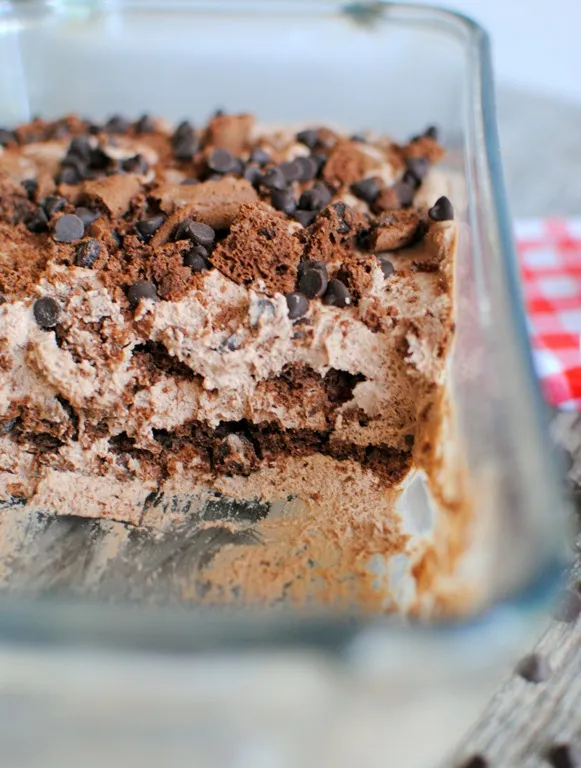

16 Types of cake and their recipes all
Bakers
should know.
Yellow Cake
Ingredients Required:
1 stick (8 tablespoons) unsalted butter, at room temperature
1/2 cup white sugar
2 large eggs
Zest of 1 lemon
1/2 teaspoons pure vanilla extract
1/2 cup fine cornmeal
1 teaspoon baking powder
1/2 teaspoon fine sea salt
2/3 cups all-purpose flour, plus 2 tablespoons
1/2 cup plain Greek yogurt
2 cups blueberries
1 tablespoon lemon juice
ICING:
1/2 cups powdered sugar
2 tablespoons fresh lemon juice
1 tablespoon heavy cream
Instructions:
Preheat the oven to 350°F. Grease a 9-inch cake pan with nonstick
spray.
In the bowl of an electric mixer fitted with the paddle attachment, cream the
butter and
sugar until light and fluffy, about 5 minutes.
Add the eggs one at a time, then beat in the lemon zest, mixing well to
combine. Add the
vanilla extract and mix to combine.
Add the cornmeal, baking powder, salt and 21/3 cups all-purpose flour; mix to
combine. Add the
yogurt and mix to combine.
In a medium bowl, toss the blueberries with the lemon juice and the remaining 2
tablespoons
flour.
Pour the cake batter into the prepared pan and spread into an even layer.
Scatter the
blueberries in an even layer over the surface of the cake batter.
Bake until a tester inserted into the center of the cake comes out clean, 45 to
55 minutes.
Let cool for 15 minutes, then gently unmold from the cake pan and let cool
completely on a wire
rack.
MAKE THE ICING: In a medium bowl, whisk together the powdered sugar, lemon juice
and cream.
When the cake has cooled, drizzle the icing all over the cake before serving.
White Cake
Ingredients Required:
1 cup (227g) unsalted butter, at room temperature
1 1/2 cups (298g) granulated sugar
1 1/2 cups (284g) buttermilk
6 large (213g) egg whites
1 1/2 teaspoons pure vanilla extract
1 teaspoon almond extract
2 1/4 cups (271g) all-purpose flour
1 tablespoon baking powder
1 teaspoon fine sea salt
FROSTING:
1 cup (227g) unsalted butter, at room temperature
4 cups (454g) powdered sugar
1 teaspoon pure vanilla extract
3/4 teaspoon almond extract
1/3 cup (81g) heavy cream
Sprinkles, as needed
Instructions:
Preheat the oven to 350°F. Grease and flour two 9-inch cake pans.
MAKE THE CAKE: In the bowl of an electric mixer fitted with the paddle attachment,
cream the butter and sugar together until light and fluffy, about 4 minutes.
In a large liquid measuring cup, whisk the buttermilk, egg whites, vanilla, and
almond extracts to combine. In a medium bowl, whisk the flour, baking powder and
salt to combine.
Add 1/3 of the flour mixture to the mixer and mix to combine. Add half of the
buttermilk mixture and mix to combine. Scrape the bowl well.
Repeat this process, alternating dry and wet ingredients until all ingredients are
incorporated. Scrape the bowl well to ensure the batter is homogenous.
Divide the batter evenly between the two prepared pans and smooth into an even
layer. Bake until a toothpick inserted into the center comes out clean, 25 to 30
minutes.
Cool in the pan for 20 minutes, then invert onto a wire rack to cool completely. Use
a serrated knife to level off the surface of each cake to make a flat surface.
MAKE THE FROSTING: In the bowl of an electric mixer, cream the butter and powdered
sugar until light and fluffy, about 4 minutes. Add the vanilla and almond extracts
and mix to combine.
With the mixer running, add the cream in a slow, steady stream until well combined.
Place one of the cake layers on a cake stand. Scoop about 1 cup of frosting onto the
cake and spread into an even layer. Top with the second cake layer. Frost the cake
all over, and garnish as desired with sprinkles.
Pound Cake
Ingredients Required:
1/2 cup (1 stick) unsalted butter, at room temperature
1 1/2 cups sugar
3 eggs
1 1/2 teaspoons pure vanilla extract
2 cups cake flour
1/2 teaspoon salt
1/2 cup heavy cream
FROSTING
4 tablespoons unsalted butter, at room temperature
1/2 cup creamy peanut butter
1/2 cup confectioners' sugar
1/2 teaspoon pure vanilla extract
1 cup milk chocolate chips
1/2 cup heavy cream
Instructions:
1. Preheat the oven to 350°F. Grease and flour a 9-by-5-inch loaf
pan.
2. MAKE THE CAKE: In the bowl of an electric mixer fitted with the
paddle
attachment, cream the butter with the sugar until light and fluffy, 4 to 5 minutes.
3. Add the eggs one at a time, scraping the side of the bowl well
after
each addition. Add the vanilla extract and mix to combine.
4. In a large bowl, sift the flour and salt together. Add a third of
the
flour mixture to the mixer and mix to combine. Addhalf of the cream and mix to
combine.
Repeat, alternating additions of flour and cream until both are fully incorporated.
5. Pour the batter into the prepared pan and bake until a toothpick
inserted
into the center comes out clean, 1 hour to 1 hour 10 minutes. Cool completely.
6. MAKE THE FROSTING: In the bowl of an electric mixer fitted with
the
paddle
attachment, cream the butter with the peanut butter and confectioners' sugar until
light
and
fluffy, 2 to 3 minutes. Add the vanilla extract and mix to combine.
7. Scoop the peanut butter mixture on top of the cooled cake. Spread
into
an
even layer and then refrigerate until set, about 30 minutes.
8. Place the chocolate chips in a small heat-safe bowl. In a small
pot,
bring
the cream to a boil over medium heat. Pour the hot cream over the chocolate chips
and
stir
until smooth.
9. Pour the chocolate glaze over the chilled cake, letting the excess
run
down the sides. Chill in the refrigerator until set, 10 to 15 minutes, before
slicing
and
serving.
Strawberry Sponge Cake
Ingredients Required:
9 ounces caster (superfine) sugar
8 large eggs
1 2/3 cups all-purpose flour, sifted
3 1/2 ounces butter, just melted
21 ounces strawberries, hulled
1 1/4 cups confectioners' sugar
7 ounces cream, whipped until firm
Directions
Preheat the oven to 350ºF. Butter and flour a 10-inch-round cake pan.
Using an electric mixer, beat the sugar and eggs until the mixture forms a thick
ribbon, about 10 minutes.
Add the sifted flour all at once and, using a rubber spatula, fold
it into the egg
mixture, gently but quickly. Mix in the melted butter, gently but quickly.
Pour the mixture into the cake pan and smooth the top with a
spatula. Bake until the
cake is lightly browned and springs back when lightly touched in the center, 30 to
40
minutes. Set aside for a few minutes before gently turning out onto a wire rack to
cool
completely.
In a medium bowl, mash two of the strawberries, then gradually
stir in the
confectioners' sugar until the mixture has the consistency of frosting.
Slice the remaining strawberries in half. Cut the sponge cake in
half horizontally.
Spread the bottom half with the whipped cream and top with two-thirds of the halved
strawberries. Replace the top half of the cake and spread the icing over the top.
Garnish with the remaining strawberry halves.
Pumpkin Chiffon Cake
Ingredients Required:
2 cups cake flour
1 1/3 cups sugar divided
1 tablespoon baking powder
1 teaspoon ground cinnamon
1 teaspoon ground ginger
1/4 teaspoon ground allspice
1/2 teaspoon ground nutmeg
1/2 cup vegetable oil
4 large egg yolks
3/4 cup pumpkin puree
1 teaspoon vanilla extract
1 cup large egg whites from 6-7 eggs
1/2 teaspoon cream of tartar
powdered sugar to taste
US Customary - Metric
Instructions:
Preheat oven to 325 F.
Sift flour, 1 cup of sugar, baking powder, and spices into a large bowl.
Add the oil, egg yolks, pumpkin puree, and vanilla.
Beat with a whisk or using a mixer on low speed until batter is smooth.
In another large bowl, beat egg whites and cream of tartar until the mixture
forms soft peaks.
Gradually beat the remaining 1/3 cup sugar into the egg whites, blending until
very stiff peaks form.
Use a rubber spatula to carefully fold one quarter of the egg white mixture into
the pumpkin batter until just mixed. Repeat three more times with the
remaining egg whites, folding until no streaks remain.
Pour the batter into an ungreased, 10-inch angel food cake pan and bake for 50-55
minutes or until a cake tester inserted into the center of the cake comes out clean.
Remove from oven and cool, inverted, for roughly two hours.
When the cake has cooled completely, run a table knife or thin spatula around the
edges, gently loosening the cake from the pan before turning it out onto a plate.
Serve with a dusting of powdered sugar.
Notes: You'll get the best results with an ungreased pan inverted during cooling
to prevent deflation.
This cake can also be made in muffin tins. Check for doneness at 20 minutes.
Preheat the oven to 350°F. Place an angel food cake pan (tube pan) on a baking
sheet. Do not grease the cake pan.
MAKE THE CAKE: Sift the cake flour and salt to combine. Set aside. In the
bowl of an electric mixer fitted with the whip attachment, whip the egg whites
and cream of tartar on medium speed until frothy, 1 minute.
Increase the speed to high and continue to whip, adding the sugar
gradually in a slow, steady stream. Continue to whip until the egg whites are
light and glossy, 4 to 5 minutes. Dip the whip attachment into the egg whites -the
mixture should stand straight up and be relatively firm but not clumpy.
Add the vanilla extract and mix to combine. Add the flour mixture
to the egg whitesand fold to combine using a spatula. Pour the batter into the
prepared cake pan and spread into an even layer. Bake until the cake
is evenly golden and fully baked, 40 to 45 minutes.
Invert the cake pan onto a cooling rack and let cool completely before unfolding.
PREPARE THE BERRIES: stir the berries with the lemon juice and
sugar to coat. Let the mixture sit for at least 15 minutes.
Slice the cake and serve each slice with a few tablespoons
of berries and whipped cream to taste.
Peppermint Devils Food Hi-Hat Cupcakes
Ingredients Required:
3/4 cup unsweetened cocoa powder
3/4 cups whole milk
4 1/2 ounces unsalted butter, at room temperature
1 1/2 cups granulated sugar
2 1/2 (142 grams) large eggs
1 1/2 teaspoons pure vanilla extract
1 1/2 cups all-purpose flour
1 teaspoon baking powder
1/4 teaspoon baking soda
1/2 teaspoon fine sea salt
CHOCOLATE GLAZE
8 ounces milk chocolate, chopped
1/2 cup coconut oil
PEPPERMINT FROSTING
5 large egg whites
2 cups granulated sugar
1/4 teaspoon cream of tartar
1/2 teaspoon pure peppermint extract
1/2 teaspoon pure vanilla extract
3 drops red food coloring (optional)
Instructions:
Preheat the oven to 350°F with a rack in the middle.
Grease and flour 18 muffin cups.
MAKE THE CUPCAKES: Place the cocoa powder in a medium heatproof bowl. Whisk in 1/2
cup
boiling
water until fully combined. Stir in the milk and set aside.
In the bowl of a stand mixer fitted with the paddle attachment
(or use a large bowl and a hand mixer), cream the butter and
granulated sugar on medium-low speed until light and fluffy, 4
to 5 minutes. Add the eggs one at a time, mixing until each is fully
incorporated before adding
the next. Scrape the bowl well. Add the vanilla extract and mix
to combine.
In a medium bowl, whisk together the flour, baking powder, baking
soda and salt. Add a third of the mixture to the butter mixture
and mix on low speed to combine. Add half the cocoa-and-milk
mixture and mix to incorporate. Repeat, alternating between the
dry and wet ingredients, until both are fully incorporated and the
batter is smooth.
Divide the batter among the prepared muffin cups. Bake the cupcakes until a
toothpick inserted into the center comes out clean, 18 to 20 minutes. Cool
the cupcakes in the pan for 10 to 15 minutes, then turn out onto a wire rack
to cool completely.
MAKE THE GLAZE: Combine the chopped chocolate and coconut oil in a medium-size
heatproof bowl and place over a medium saucepan of barely simmering water
(with the bowl not touching the water). Heat, stirring occasionally, until the
mixture is fully melted and combined. Set aside to cool to room temperature.
MAKE THE FROSTING: Combine the egg whites, sugar, 1/4 cup water and cream of tartar
in
a large heatproof bowl. Place the bowl over a medium saucepan of barely simmering
water (with the bowl not touching the water) and heat, whisking constantly, until
the sugar is dissolved and the mixture is slightly warm to the touch, 2 to 3
minutes.
(If you want to check it with an instant-read thermometer, it should register about
140°F.)
Transfer the mixture to a stand mixer fitted with the whisk attachment (or use a
large bowl and a hand mixer) and whip on medium-high speed until the frosting is
light and fluffy and holds medium peaks, 6 to 7 minutes. Add the peppermint and
vanilla extracts and the for coloring, if using, and mix to combine. Transfer the
frosting to a disposable pastry bag fitted with a plain tip about 1/2 inch wide (or
just cut a 1/2-inch opening at the tip of a pastry bag or at the corner of a
heavy-duty zip-top bag).
Place the cupcakes on a work surface and pipe a tall spiral of frosting onto
each one: Pipe frosting all around the edge and then let the frosting build upward
once you reach your starting point. Build the spiral upward, layer by layer, until
it's about 3 inches tall. When you've nearly finished piping, release the pressure
on the bag and pull it away, giving the spiral a nicely curled tip. Chill the
frosted cupcakes for 20 to 30 minutes.
Line a baking sheet with parchment paper and set a wire rack on top. Transfer
the cooled chocolate glaze to a tall container, such as a large liquid
measuring cup (this makes for easierdipping; be sure the opening of the
container is wide enough for the cupcakes). Hold each cupcake upside down
and dunk it deep enough into the chocolate glaze to fully cover the frosting.
Let any excess glaze drip off. (Because the cupcakes are cold, though, the glaze
should start to set immediately.) Set the glazed cupcake on the wire rack.
Transfer the cupcakes to the refrigerator and chill until the glaze is
set, at least 5minutes.
Red Velvet Cake
Ingredients required for Red Velvet Cake:
Homemade cakes aren't quit as simple as a cookie recipe, but
this homemade cake doesn't call for any specialty ingredients. you probably
already have all of these in your cupboard right now!
All purpose flour: No need for cake flour here! Regular old all purpose
flour will produce a tender and velvety crumb.
Cocoa powder: You'll only need a little bit of cocoa powder to make that
perfect hint of chocolate flavor.
Baking soda: Baking soda will work as the perfect leavener for this cake
recipe! The buttermilk and vinegar give it a little extra oompf for the perfect rise.
Vegetable oil: We often like to bake our cakes with a combination of oil
and butter, but when it comes to velvet cakes, oil will produce the silkiest texture!
Granulated sugar: Granulated sugar will sweeten your cake perfectly!
Eggs: Make sure your eggs are at room temperature to ensure they incorporate
seamlessly into the batter! You'll need 4 large eggs to create that perfect
cakey, yet fudgy crumb.
Vanilla extract: Never skimp on vanilla extract. This is a chocolatey vanilla
cake, after all so you'll need a healthy dose of pure vanilla extract.
Vinegar: I know you don't usually see this on your ingredient list for
homemade cake, but the vinegar will give your cake a little extra tang for
that perfect southern red velvet cake.
Buttermilk: If you don't have buttermilk on hand, you can always make your
own! Check out our homemade buttermilk recipe here!
Red food coloring: You can't have red velvet cake without red food coloring! We used
gel food coloring, but you can use whatever you have on hand and just adjust
the quantities accordingly.
Tips for Red Velvet Cake:
Homemade cake might seem intimidating, but this recipe is
super easy to follow!
Follow these 4 easy tips and you'll have tender red velvet cake
mastered in no time!
Sift the dry ingredients: I am not a devout sifter. I'm really not,
but when it comes to homemade cake it's a must. To get that soft
and velvety crumb it's crucial to distribute your leavening agent
and make sure no clumps of flour remain in your dry ingredients!
Don't over bake: The last thing you want is a dry cake. Take the
cakes out when a toothpick inserted into the middle comes out mostly
clean and they are just starting to spring back. Remember that your
cakes will continue to bake as they cool, so better to have them a little
underdone than over done.
Don't forget the cream cheese frosting: Classic red velvet cake is just
as much about the frosting as it is the cake. Eating red velvet cake
with anything other than dream cream cheese icing is simply wrong.
Use a crumb coat: The red velvet cake is so red that we recommend using
a crumb coat on your cake to prevent any pesky red crumbs from getting into
your snowy white cream cheese frosting! Moist red velvet cake with cream
cheese frosting.
What size cakes will this recipe make?
You can make red velvet cake of all shapes and sizes!
The recipe as written will make:
9 x 13 inch sheet cake: Bake the cake for ~35 minutes!
You'll know it's done when a toothpick inserted into the center
comes out mostly clean and it springs back to the touch.
8 or 9 inch rounds: Follow the directions as stated and you'll
end up with a cake just as it's pictured here!
6 inch rounds: Divide the batter evenly between 3 6 inch
cake rounds and bake for 25ish minutes!
28 cupcakes: Use a large cookie scoop or a 1/3 cup measurement to
make cupcakes! Bake for about 17 minutes or until a toothpick inserted
into the middle comes out mostly clean!
Citrus Short Cake
Ingredients Required:
31/2 cups (420g) all-purpose flour
1/2 cup (106g) light brown sugar
4 teaspoons baking powder
1/2 teaspoon baking soda
1/2 teaspoon fine sea salt
3 sticks (339g) cold unsalted butter,
cut into 1/2-inch cubes
1 cup (230g) cold buttermilk
1 large (56g) egg
1 teaspoon pure vanilla extract
Heavy cream, as needed for finishing
Turbinado sugar, as needed for finishing
TOPPING:
2 cups (470g) cold heavy cream
3/4 cup (85g) confectioners' sugar
1/2 teaspoon pure vanilla extract
6 to 8 pieces mixed citrus (such as oranges,
blood oranges, grapefruits, mandarins,
tangerines, etc.), segmented
Instructions:
Preheat the oven to 350°F. Lightly grease a
9-inch cake pan with nonstick spray.
Make the shortcake: In the bowl of a food processor, pulse the
flour, brown sugar, baking powder, baking soda and salt to combine.
Add the butter and pulse until only pea-size pieces remain.
(You can also do this by hand, but it will take longer.) Transfer
the mixture to a large bowl.
In a medium bowl, whisk together the buttermilk, egg and vanilla to
combine. Add the wet mixture to the flour mixture and mix to combine.
The mixture should be uniform with no dry patches. Use your hands to
make sure it's combined, but don't overmix.
Transfer the dough to the prepared pan and press it into an even layer
(you can lightly moisten your hands if it's sticking). Brush the surface
with heavy cream, then sprinkle with the turbinado sugar. Bake the
shortcake until golden brown, 40 to 45 minutes. Cool for 10 minutes in
the pan, then invert onto a cooling rack to cool completely.
Make the topping: In the bowl of an electric mixer fitted with the
whisk attachment, whip the heavy cream on medium speed to soft peaks,
abouts 5 minutes. Add the confectioners' sugar and vanilla, and whip
to medium peaks, about 2 minutes more.
Transfer the shortcake to a serving platter. To serve, spoon about half
the whipped cream on top of the cake and spread it into an even layer.
Spoon the citrus segments on top. Serve immediately, with more
whipped cream on the side.
Orange flower olive oil Cake
Ingredients Required:
1 cup plus 2 tablespoons (160g) all-purpose flour
Grated zest of 1 orange, lemon or Meyer lemon
3/4 cup (150g) granulated sugar
1 teaspoon baking soda
1/4 teaspoon kosher salt
1 extra-large egg
3/4 cup (180ml) buttermilk
1/3 cup (80ml) extra-virgin olive oil
1 teaspoon orange flower water, optional
Confectioners' sugar, as needed
Fresh berries or sliced fresh stone fruits, optional, for serving
Instructions:
Position a rack in the center of the oven, and preheat the oven
to 325°F. Lightly grease an 8-inch cake pan and line the bottom
with parchment paper.
In a medium bowl, whisk together the flour, zest, sugar, baking
soda and salt. In another bowl, whisk the egg with the buttermilk,
olive oil and orange flower water, if using, until everything
is combined.
Pour the buttermilk mixture over the flour mixture and stir until
they are completely combined. Scrape the batter into the prepared
pan with a spatula.
Bake until the cake is golden and the top springs back lightly
against your fingertip, 30
to 35 minutes.
Cool the cake in the pan for 10 minutes. Run a knife around the edge of the pan,
then
gently invert it onto a rack and carefully pull off the parchment paper. Let the
cake cool
completely.
Sprinkle the top of the cake with confectioners' sugar or serve
plain, topped with fresh fruit.
Flourless Cake
Ingredients Required:
1/2 cup (115g; 1 stick) unsalted butter
6 ounces (170g) high quality semi-sweet chocolate, finely chopped*
2/3 cup (135g) granulated sugar
2 teaspoons espresso powder
1 and 1/2 teaspoons pure vanilla extract
4 large eggs, at room temperature
1/3 cup (27g) unsweetened natural or dutch-process cocoa powder
1/8 teaspoon salt
optional: 1/2 teaspoon baking powder
Mocha Whipped Cream:
1 teaspoon espresso powder
1 teaspoon warm water
1 cup (240ml) cold heavy cream or heavy whipping cream
3 Tablespoons (22g) confectioners' sugar (see note)
1 Tablespoon (6g) unsweetened natural or dutch-process cocoa powder
optional: raspberries and a dusting of confectioners' sugar
Cook Mode Prevent your screen from going dark
Instructions:
Preheat oven to 350°F (177°C). Make sure you have a bottom oven rack
and a center
oven rack
in place for step 5. Grease an 8-inch round cake pan, line with parchment paper
rounds, then
grease the parchment paper. Parchment paper helps the cakes seamlessly release from
the
pans. (If it's helpful, see this parchment paper rounds for cakes video & post.) The
cake
WILL stick unless it's lined and generously greased. (Trust me!)
Cut the butter into pieces so it melts evenly. Place in a large heat-proof bowl. Add
chopped
chocolate. Melt in 20 second increments in the microwave, stirring after each
increment
until completely melted and smooth. Let cool for 2-3 minutes. You can use a double
boiler
for this step if desired.
Whisk the sugar, espresso powder, and vanilla extract into the chocolate mixture.
Whisk in
the eggs until smooth. The mixture will be heavy and tacky, like brownie batter.
Whisk in
the cocoa powder, salt, and baking powder (if using).
Pour and spread batter into prepared cake pan.
Prepare the steamy oven: Place a large metal roasting pan or baking dish on the
bottom oven
rack. Do not use glass. Pour boiling water about 2 inches up the sides of the pan.
(I just
boil a kettle of water.) Quickly place the cake on the center rack and shut the oven
door,
trapping steam inside. The steamy oven helps guarantee an extra moist cake.
Bake for 30 minutes until the edges are set. The cake is done when a toothpick
inserted into
the center of the cake comes out clean OR comes out with just a few moist crumbs.
It's
important to not over-bake this cake, which dries it out. Begin checking it at 25
minutes.
Don't be alarmed if the cake rises extra tall around some of the edges and slightly
cracks-
this is normal (it's the eggs expanding) and will flatten out as it cools.
Remove from the oven, place cake on a cooling rack, and cool for only 10 minutes in
the cake
pan. Run a sharp knife around the edges to help release the warm cake, then quickly
invert
it onto a serving plate or cake stand. (If it cools completely in the pan, it's very
difficult to release from the pan.) Cake will be a little crumbly on the edges. Cool
completely. I usually stick it in the refrigerator for 1-2 hours.
Once the cake is cool, top with your choice of toppings. My suggestions are listed
above
this recipe. I love it with my mocha whipped cream.
Mocha Whipped Cream: Using a fork, mix the espresso powder and warm water together
in a very
small bowl. Cool down for a few minutes. Using a hand mixer or a stand mixer fitted
with a
whisk attachment, whip the heavy cream, sugar, cocoa powder, and espresso mixture on
medium-high speed until medium peaks form, about 3-4 minutes. Medium peaks are
between
soft/loose peaks and stiff peaks and are the perfect consistency for topping and
piping on
desserts. Serve cake with whipped cream or pipe it on top.
Cover and store leftover cake in the refrigerator for up to 5 days.
Notes
Make-Ahead & Freezing Instructions: Prepare recipe through step 4 up to 1 day in
advance.
Cover and store in the refrigerator until ready to bake. Continue with step 5. Since
it's
cold, the cake batter will take a few extra minutes to bake. To freeze- invert and
cool cake
as directed. Wrap with 2 layers of plastic wrap and 1 layer of aluminum foil. Freeze
for up
to 3 months. When ready, thaw overnight in the refrigerator, then bring to room
temperature
before decorating/serving. See how to freeze cakes for detailed instructions on
freezing
cakes.
Special Tools (affiliate links): 8-Inch Round Pan | Glass Mixing Bowls | Whisk |
Cooling
Rack | Electric Mixer (Handheld or Stand) | Ateco 849 | Fine Mesh Sieve
Chocolate: Use 6 ounces of “baking chocolate” bars found in the baking aisle.
They're sold
in 4 ounce bars, so you'll need 2. (You'll have 2 ounces leftover for another use.)
I prefer
Bakers or Ghirardelli brands. Do not use candy melts, chocolate dipping wafers, or
chocolate
chips- all contain stabilizers or added ingredients which prevent them from melting
into the
same silky consistency needed for the base of this cake. Feel free to use
bittersweet
chocolate for a darker chocolate flavor. I don't recommend white chocolate or
unsweetened
chocolate.
Espresso Powder: I highly recommend this addition to help deepen the chocolate
flavor,
though you can leave it out if necessary. Espresso powder is like instant espresso,
found in
the coffee aisle. You can also use instant coffee granules. (Not ground coffee.)
Baking Powder: This is an optional ingredient. In my recipe testing, I found a touch
baking
powder added *a little* extra lift to this normally flat cake. (It's still pretty
flat even
with it though!) If you want to skip the leavening, leave it out.
Confectioners' Sugar: If you prefer a sweeter whipped cream, increase confectioners'
sugar
to 1/4 cup (4 Tbsp; 30g).
8 Inch Cake Pan: I recommend an 8-inch cake pan. A 9-inch cake pan works, but the
cake is
thinner. The bake time will be a couple minutes shorter in a 9-inch cake pan.
Citrus Upside-down Cake
Ingredients Required:
Topping:
3 tablespoons unsalted butter
1/3 cup light brown sugar
1 Meyer lemon, halved and thinly sliced
1 navel orange, halved and thinly sliced
1 cara cara orange, halved and thinly sliced
1 blood orange, halved and thinly sliced
Cake:
2 sticks unsalted butter, softened
1/2 granulated cup sugar
1/2 cup light brown sugar
2 large eggs
1 teaspoon pure vanilla extract
1 cup all-purpose flour
3/4 cup whole-wheat flour
1 teaspoon ground cinnamon
1 teaspoon baking powder
1/2 teaspoon baking soda
3/4 teaspoon salt
11/2 cups sour cream
Directions
MAKE THE TOPPING: Preheat the oven to 350°F. Grease a 9-inch
cake pan generously with the butter, being especially generous
when coating the base of the pan.
Sprinkle the brown sugar evenly over the base of the pan. Arrange
the citrus in lines across the cake pan, starting with lemon
slices on the left side. Follow with lines of navel orange slices,
then cara cara slices and finally blood orange slices to create
an ombré effect. Overlap the pieces slightly to fit in as many as
possible.
Make the cake: In the bowl of an electric mixer fitted with the
paddle attachment, cream the butter, granulated sugar and light
brown sugar until light and fluffy, about 4 minutes.
Add the eggs one at a time, mixing well to combine. Add the
vanilla extract and mix to combine.
Add the all-purpose flour, whole-wheat flour, cinnamon, baking
powder, baking soda and salt. Mix to combine.
Add the sour cream and mix well to combine. Pour the batter
over the prepared citrus slices and gently spread into an
even layer.
Bake until a toothpick inserted into the center of the cake
comes out clean, 40 to 45 minutes. Let cool for 10 minutes
inside the pan before inverting onto a cooling rack to
cool completely.
Preheat the oven to 350°F. Grease a loaf pan with nonstick spray.
PREPARE THE FRUIT: In a medium-size heat-safe bowl, toss the apricots
with the cranberries, cherries and raisins. In a small pot, bring the
bourbon to a simmer. Pour it over the fruit and let sit for 10 minutes.
Drain the fruit, reserving the bourbon. Transfer the fruit to
another medium bowl and toss with the pistachios, hazelnuts,
pecans and almonds. Set aside.
Make the batter: In the bowl of an electric mixer fitted with the
paddle attachment, cream the butter and brown sugar until light
and fluffy, 4 to 5 minutes. Add the eggs one at a time, scraping
the side of the bowl well after each addition.
Beat in the vanilla extract, orange zest and cinnamon. Add the flour
and baking powder; mix just until combined.
Bake the cake: Add the fruit-and-nut mixture to the batter and mix
to combine. Pour the batter into the prepared pan and smooth the
surface. Garnish with a sprinkle of turbinado sugar, then bake
until golden and cooked through, 2 to 21/2 hours.
While the cake is baking, bring the reserved bourbon to a simmer and
reduce to about 1/4 cup. Pour the reduced bourbon over the warm cake
as soon as it comes out of the oven. Let the cake cool completely before
slicing and serving. The uncut cake will keep for up to two
weeks in an airtight container.

Gluten-free Double Chocolate No Bake Icebox Cake
Ingredients Required:
1 pint heavy whipping cream
2 tablespoons cocoa powder
2 tablespoons powdered sugar
1/3 cup mini chocolate chips
1 16-ounce package Enjoy Life Double Chocolate Crunchy
Cookies (or 14 crispy chocolate
cookies of your choice)
Instructions:
Using a hand mixer or an electric mixer fitted with the whipping attachment,
whip heavy whipping cream in a large bowl on low speed while gradually
adding cocoa powder and powdered sugar. Gradually increase speed as whipped
cream thickens. Whip until cream is thick enough to hold its shape but not
lumpy.
Spread a thin layer of whipped cream into the bottom of a standard-size loaf
pan (9x5 inches). Layer 1/3 of the cookies on top of the whipped cream (you
may need to break a couple of cookies to get them to fit) and sprinkle with
1/3 of the chocolate chips. Spread another layer of whipped cream and top
with another 1/3 of the cookies and another 1/3 of the chocolate chips.
Spread a final layer of whipped cream on top. Crush remaining cookies
and sprinkle on top of the whipped cream. Sprinkle with remaining mini
chocolate chips.
Cover the dish and refrigerate overnight or for at least five hours to give
the cookies time to soften a bit. When ready to serve, slice into icebox
cake and serve immediately.
Tips:
This recipe can easily be doubled to feed more people. If you choose
to double it, the recipe will work well in an 8 by 8 pan.
If you're looking for a dairy-free version of this recipe, coconut
whipped cream can be substituted for the whipped cream.
Mini Carrot Cakes with Cream Cheese Frosting
Ingredients Required:
1 1/2 sticks (12 tablespoons) unsalted butter, at room temperature
3/4 cup granulated sugar
1 egg
1 egg yolk
3/4 teaspoon pure vanilla extract
1 1/2 cups all-purpose flour
1/2 teaspoon baking powder
1/2 teaspoon baking soda
3/4 teaspoon cinnamon
Pinch of ginger
Pinch of nutmeg
1/2 teaspoon salt
1/4 cup whole milk
8 ounces carrots, grated (11/2 cups)
1 cup chopped walnuts, toasted
CREAM CHEESE FROSTING
8 ounces cream cheese, at room temperature
1 stick (8 tablespoons) unsalted butter, at room temperature
11/2 cups confectioners' sugar
1/2 teaspoon pure vanilla extract
Toasted chopped walnuts, for topping
Cinnamon, for topping
Instructions:
Preheat the oven to 350°. Grease a 9-by-13-inch rimmed baking sheet
with nonstick spray. Then line the sheet with parchment paper and
lightly grease the parchment with nonstick spray as well (see
Finishing Touches, below).
Make the cake: In the bowl of an electric mixer fitted with the paddle
attachment, cream the butter and sugar until light and fluffy, 3 to 5
minutes. Add the egg and egg yolk gradually, scraping well after they
are combined. Beat in the vanilla.
In a large bowl, whisk the flour with the baking powder, baking soda,
cinnamon, ginger, nutmeg and salt. Add these dry ingredients to the
butter mixture, and mix just until incorporated.
Add the milk, carrots and walnuts to the batter, then mix to combine. Pour the
batter into the prepared baking sheet and spread to form a smooth, even layer.
Bake until the cake springs back slightly when touched, 15 to 20 minutes. Cool
for 5 minutes, then cut out 24 circles using a 2-inch cookie cutter (or the
mouth of a glass) while the cake is still slightly warm. Cool completely,
about 30 to 45 minutes.
Make the frosting: In the bowl of an electric mixer fitted
with the paddle attachment, cream the cream cheese with the butter,
sugar and vanilla until smooth and fluffy. Set aside.
ASSEMBLE THE CAKES: Place a cake round onto a plate.
Use a spoon to dollop a heaping tablespoon of frosting on top of the
cake. Top with another cake round and press slightly. Repeat with another
layer of frosting and cake. Finish each mini cake with a dollop
of frosting, a sprinkling of toasted walnuts and a dusting of cinnamon.
Chocolate Glazed Espresso Cheesecake
Ingredients Required:
2 1/2 cups chocolate cookie crumbs
2 tablespoons sugar
4 tablespoons butter, melted
Cheesecake:
1/4 cup heavy cream
2 1/2 tablespoons instant espresso powder
3 pounds cream cheese
1 cup sour cream
1 3/4 cups sugar
5 eggs
1 tablespoon pure vanilla extract
Pinch of salt
Glaze:
1/3 cup heavy cream
2 tablespoons corn syrup
1/2 cup chopped milk chocolate
Instrutions:
Preheat the oven to 325°F. Lightly grease the base of a 10-inch
springform pan with nonstick spray.
Make the crust: In a large bowl, mix the chocolate cookie crumbs with
the sugar and melted butter to combine. Press the mixture evenly into
the base of the prepared springform pan. Bake until set, 10 to
15 minutes. Cool.
Make the cheesecake: In a small pot, bring the cream to a simmer
over medium heat. Add the espresso powder and stir to combine.
Cool to room temperature.
In the bowl of a food processor, pulse the cream cheese, sour
cream, cooled heavy cream with espresso powder and sugar until
well combined. Scrape well after mixing. Add the eggs one at
a time, pulsing and scraping well after each addition. Add
the vanilla and salt, and pulse to combine.
Pour the batter over the cooled crust and transfer to the oven.
Once the cheesecake is in the oven, reduce the temperature
to 300°F. Bake until the cheesecake is set but still slightly
jiggly in the center, about 1 to 1 and 1/2 hours.
Turn off the oven and leave the cheesecake inside for 1 hour.
Remove the cheesecake from the oven and refrigerate until
fully cooled, about 2 hours. Run a knife around the edge
of the cooled cheesecake, then release it from the springform
pan.
Make the glaze: In a small pot, heat the cream and corn syrup
over medium heat. Place the milk chocolate into a small
heat-safe bowl. When the cream comes to a boil, pour it over the
chocolate. Let it sit for 15 seconds, untouched. Mix the ganache
to combine, and pour immediately over the cheesecake. Let set
before slicing and serving.
Note: This recipe is for an ultra-tall New York-style cheesecake.
You can halve the amounts for the cheesecake custard and glaze
(keep the crust amount the same) for a more moderately sized
cheesecake. Reduce the baking time to 45 minutes to 1 hour.